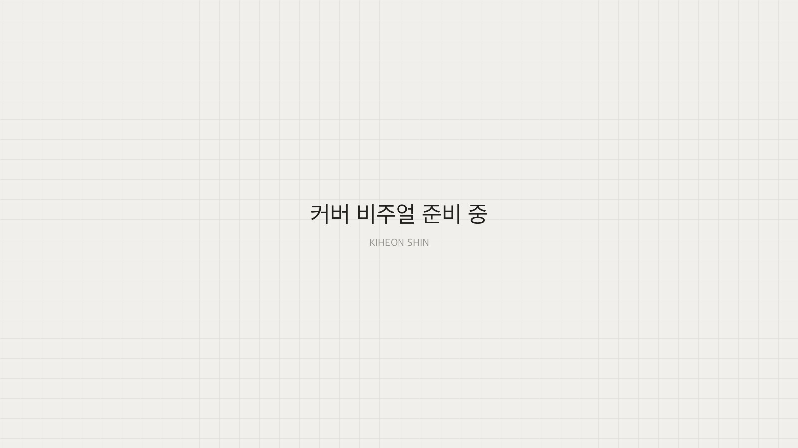
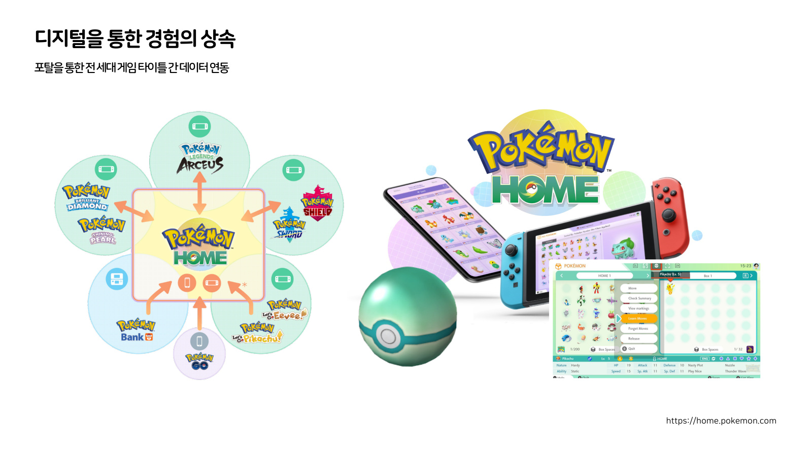
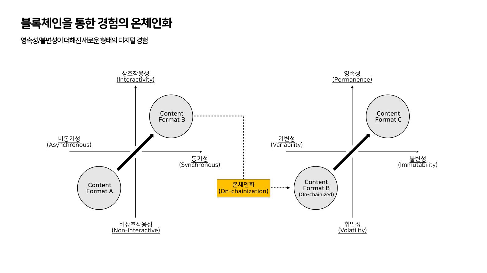
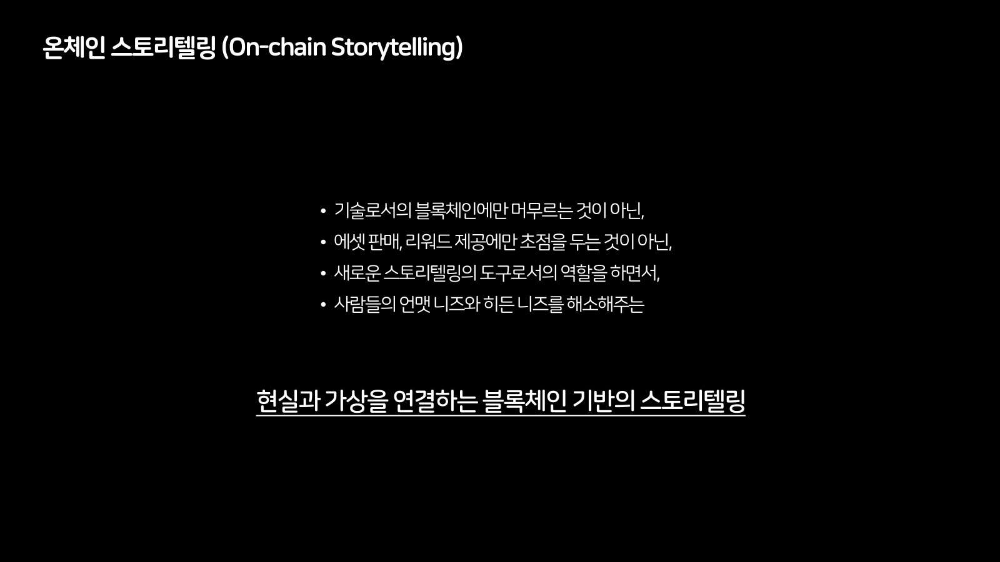
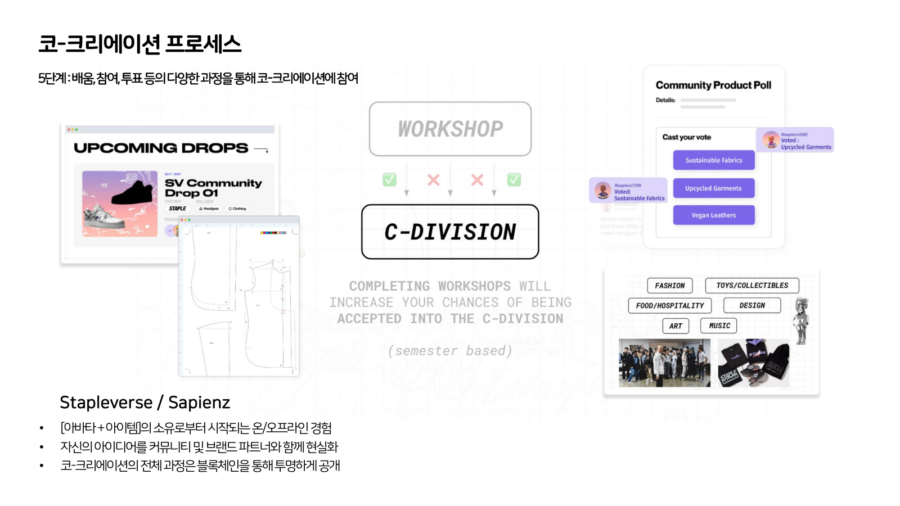
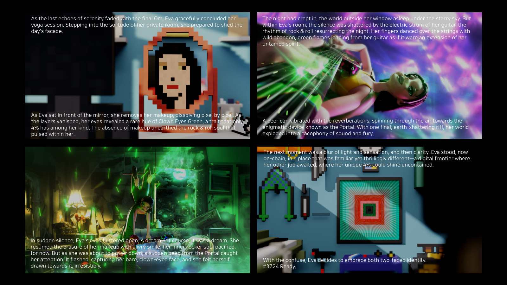
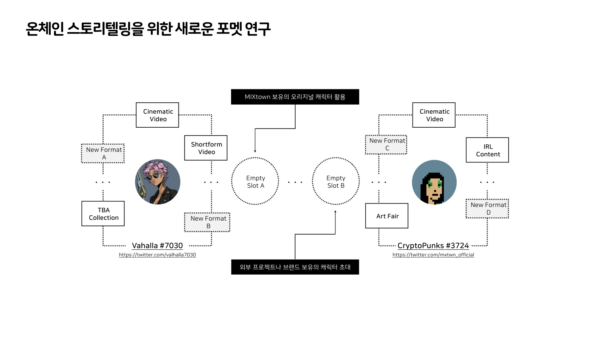

기록이 이야기가 될 때코-크리에이션 문화PART 3

2023년 11월 9일 부산이었다. 블록체인 기반의 스토리텔링을 주제로 무대에 섰는데, 첫 대목은 블록체인이 아니라 포켓몬 한 마리였다. 그 포켓몬은 나와 476킬로미터를 걸었고, 나는 그걸 물려주려다 물려줄 수 없다는 사실을 알게 됐다. 이 글은 그날의 이야기를 3년 뒤에 다시 정리한 것이다. 넉 달 남짓 전의 무대에서 나는 누가 만드는가를 물었고, 이 발표에서는 그렇게 만든 것이 무엇으로 남는가를 물었다.
시리즈 안내 : 이 글은 "코-크리에이션 문화" 3편이다. (1) 창의성은 누구의 것인가 (2) 경계면에서 (3) 기록이 이야기가 될 때 이 시리즈는 2023년 두 차례의 발표를 3년 뒤에 1인칭으로 다시 정리한 것이다.
01476킬로미터
발표를 시작하면서 나는 객석에 한 가지를 미리 말했다. 어제오늘 무거운 주제를 많이 들으셨을 텐데 제가 준비한 건 말랑말랑한 내용이니 편한 마음으로 들어주시면 좋겠다고. 블록체인을 다루는 자리의 첫 문장으로는 조금 이상한 말이다. 그런데 그 말은 예고였다. 나는 그날 컨트랙트 구조를 먼저 꺼낼 생각이 없었다.
나는 테마파크를 만드는 일을 오래 했다. 그 일 때문에 여러 나라의 테마파크를 돌아다녔고, 도시를 옮길 때마다 포켓몬 고를 켰다. 장소마다 포켓몬을 잡았고, 잡은 것을 진화시켰고, 그 과정을 스스로 이야기로 만들어 사람들과 나눴다. 무대에서 나는 화면에 포켓몬 한 마리를 띄워놓고 말했다. 세상에는 이것과 똑같이 생긴 개체가 너무 많다고. 그런데 이 한 마리만은 나에게 다른 뜻이라고.
이유는 단순하다. 내가 힘들게 돌아다닌 그 시간을 이 포켓몬이 476킬로미터로 나와 함께 걸었기 때문이다. 그 게임에는 함께 걸은 거리가 숫자로 쌓인다. 걸어서 얻은 것으로 진화시키고 성장시켰으니 그 숫자는 게임의 지표이면서 동시에 몇 년치 출장 기록이기도 했다. 나는 그 숫자를 좋아했다. 내가 어디에 갔었는지를 내가 아니라 이 캐릭터가 기억하고 있었다.
이후에 결혼을 하고 아이가 태어났을 때, 나는 그 계정을 아이에게 물려줬다. 476킬로미터를 걸은 포켓몬도 함께 넘어갔다. 무대에서 나는 여기까지 말하고 한 박자 쉬었다. 그리고 방금 한 말을 스스로 뒤집었다.
계정 양도는 약관 위반이다. 적발되면 계정은 정지되고 포켓몬은 회수된다. 내가 물려줬다고 믿은 것은 애초에 물려줄 수 있는 것이 아니었다. 476킬로미터는 그들의 서버에 적힌 그들의 숫자였고, 나는 그 숫자를 오래 빌려 쓴 사람이었다.
그날 무대에서 도달한 문장은 이것이었다. 완벽한 소유라는 개념이 이들의 플랫폼에 존재하지 않는다.
이건 어느 회사를 탓하는 말이 아니다. 약관은 정당하고 계정 거래를 막는 이유도 분명하다. 다만 나는 그 순간에 지난 몇 년 동안 쌓았다고 여긴 것의 성격을 처음 정확히 알게 됐다.
이 대목에서 화면에 걸린 것은 문장이 아니라 장면이었다. 포켓몬 한 마리, 걸어온 거리, 그리고 계정 하나. 논증은 전부 말로 했다. 무거운 주제 사이에 말랑말랑한 것을 준비했다고 먼저 밝힌 이유도 여기에 있었다. 소유가 무엇인지를 정의로 시작하면 듣는 사람은 그 정의를 검토한다. 잃어버린 것에서 시작하면 듣는 사람은 자기가 잃어버린 것을 떠올린다. 나는 두 번째 쪽을 골랐다.
022017년에 블록체인을 공부한 이유
무대에서 나는 왜 이 이야기를 블록체인 세션에서 꺼내는지 설명했다. 테마파크를 만들면서 늘 걸리던 문제가 하나 있었다는 것이다. 방문객이 그 안에서 겪은 것을 어떻게 남길 것인가.
물리 세계에 지은 이야기는 오래가지 않는다. 시간이 지나면 색이 바래고 부서지고, 날씨가 나쁘면 그날의 경험 자체가 달라진다. 같은 조형물도 어느 지점에서 보느냐에 따라 전혀 다르게 보인다. 이 관찰의 출발점이 된 루브르 피라미드의 작업은 이 시리즈 2편에서 다뤘으니 여기서는 한 줄로 지나간다.
그리고 더 큰 문제가 있었다. 내가 그 도시를 경험하고 기억하는 일은 일어나는데, 그 도시가 나를 기억해주는 일은 일어나지 않는다. 나는 그 둘을 위아래로 나란히 놓고 봤다. 우리가 방문한 도시를 경험하고 기억하는 것, 그리고 도시가 우리에 대해 기억하고 응대해주는 것. 무대에서 나는 여러 도시를 돌아다니며 겪은 것이 결국 내 머릿속에서 흩어져 버렸다고 말했다. 다시 찾아갔을 때 그 도시가 내 이름을 불러주는 경험은 갖지 못했다고. 기억은 한쪽에만 쌓였고, 그 한쪽은 시간이 지나면 흐려지는 쪽이었다.
그래서 2017년에 블록체인을 공부했다. 시세 때문이 아니었다. 이 경험을 어떻게 남기지, 라는 질문의 끝에 닿은 것이 그 기술이었다. 6년이 지나 부산의 무대에서 나는 그 6년 전의 동기를 처음으로 공개된 자리에서 말했다.
지금 다시 보면 그건 기술의 동기라기보다 보관의 동기였던 것 같다. 새로운 판이 열린다고 생각해서 그쪽을 본 게 아니라, 만들어놓은 것이 자꾸 사라져서 봤다.
발표에서 이 이야기를 길게 하지는 않았다. 다만 블록체인이라는 단어를 큰 글자로 처음 꺼낸 것은 발표가 한참 진행된 뒤였다. 그 앞은 전부 테마파크와 도시와 포켓몬이었고, 기술의 이름은 그 뒤에 놓였다. 기술을 목적 자리에 두지 않았다는 것이 발표의 순서에 그대로 남아 있는 셈이다. 무엇을 먼저 말하느냐가 그 자리를 무엇에 관한 것으로 만드는지는 그때도 알고 있었다. 나는 이 이야기가 기술에 관한 것이 아니라 남기는 일에 관한 것이기를 바랐다.
03경험의 상속
블록체인을 기술적 요소라고 규정해놓고 바로 다음에 꺼낸 것은 블록체인이 아니었다. 다시 포켓몬이었다.
이 IP는 1996년에 시작했다. 그때 나온 게임의 데이터가 지금도 끊기지 않고 이어진다. 포켓몬 홈이라는 서비스가 포탈 역할을 해서, 세대가 다른 타이틀 사이로 데이터를 옮긴다. 보관하고, 전송하고, 다음 게임에서 다시 쓴다. 전송 과정에서만 얻을 수 있는 것도 따로 있다. 나는 그 구조를 두 줄로 정리했다. 포탈을 통한 전 세대 게임 타이틀 간 데이터 연동, 그리고 데이터 연동을 통한 추가적인 경험과 보상.
나는 이것을 디지털을 통한 경험의 상속이라고 불렀다. 상속(inheritance, 다음 자리로 넘겨주는 것)이라는 단어를 고른 이유는 이게 저장(storage, 같은 자리에 남겨두는 것)과 다르기 때문이다. 저장은 그 자리를 지키는 일이고 상속은 자리를 옮기는 일이다. 포켓몬 홈이 하는 일은 후자다.
이 사례가 그 자리에 있었던 이유는 분명하다. 블록체인이 필요하다고 말하려면 블록체인 없이 이미 어디까지 가 있는지를 먼저 보여줘야 한다. 27년 동안 데이터를 끊지 않고 이어온 회사가 있고, 그 회사는 체인을 쓰지 않는다.
그래서 이 구간은 반례가 아니라 기준선이었다. 이 회사가 잘한 일을 자세히 설명할수록 뒤에 올 질문의 자리가 좁아진다. 여기까지 온 회사가 아직 하지 못한 일이 남아 있다면 그건 능력의 문제가 아닐 것이다.
같은 게임의 현장 이벤트가 홍콩과 런던과 파리와 상하이로 이어진 목록도 나란히 놓았다. 도시가 바뀌어도 내가 데리고 다니는 것은 같다는 구조를 한눈에 보여주는 목록이다. 도시를 옮겨도 계정 하나가 따라온다는 감각은 앞 절의 476킬로미터가 이미 설명한 것이고, 그 회사는 그 감각을 27년째 관리하고 있었다.

04그럼에도 할 수 없는 일
그 구간을 다 지나고 나서 한 줄을 띄웠다. 그럼에도 닌텐도, 디즈니가 할 수 없는 일들.
그리고 매트릭스가 나온다. 가로축은 상호작용성(interactivity, 사용자가 개입해 바꿀 수 있는 정도)이고 세로축은 동기성(synchronous, 여러 사람이 같은 시간에 함께 겪는 정도)이다. 기술이 발전하면서 콘텐츠 포맷은 비상호작용이고 비동기적인 쪽에서 상호작용이고 동기적인 쪽으로 이동해 왔다. 나는 그걸 포맷 A에서 포맷 B로의 이동으로 그렸다. 요소를 한 번에 다 보여주지 않고 하나씩 붙여나갔기 때문에, 무대에서는 화면이 조금씩 자라는 것처럼 보였다.
그 이동에는 대가가 있다. 무대에서 나는 이렇게 말했다. 디지털은 휘발된다고. 특정 조직의 서버 안에 존재하는 동안 그것들은 그 조직의 방침을 벗어날 수 없다고. 상호작용성과 동기성이라는 좋은 속성을 얻는 대신 휘발성(volatility)과 가변성(variability)을 같이 얻는다는 것이다. 그래서 현실 세계에서 만들어진 가치가 디지털로 넘어와 자리를 잡기가 어려웠다.
세 번째 이동이 여기서 나온다. 온체인화(on-chainization). 두 축이 만드는 평면 바깥으로 나가는 화살표다. 포맷 B가 온체인화를 거쳐 포맷 C가 되고, 그 새 자리의 축 이름은 영속성(permanence)과 불변성(immutability)이다. 반대편에 놓인 것이 앞에서 말한 휘발성과 가변성이다. 그 아래에 한 줄을 달았다. 영속성과 불변성이 더해진 새로운 형태의 디지털 경험.
이 그림이 무엇을 뒤집었는지는 앞 절과 붙여 읽어야 보인다. 앞에서 나는 27년 동안 데이터를 이어온 회사를 칭찬했다. 그 회사가 하는 일은 데이터를 다음 세대의 게임으로 옮겨주는 것이고, 옮겨주는 주체가 늘 그 회사라는 것이 이 구조의 전제다. 476킬로미터가 회수될 수 있었던 이유와 이 매트릭스가 세 번째 축을 필요로 한 이유는 같은 자리에 있다.
3년 뒤에 이 그림을 다시 보면 답보다 축이 오래 간다. 가장 잘하는 회사조차 할 수 없는 일이 무엇인가를 먼저 묻고, 그 답을 두 축 위에 올려놓고, 평면 안에서 답이 안 나오면 축을 하나 더 세워보는 방식. 그 세 번째 축 자리에 무엇을 넣느냐는 시기마다 달라질 수 있는 것 같다.

05무엇이 아닌지부터 적었다
그다음에 놓은 것은 단어 하나였다. 온체인 스토리텔링(on-chain storytelling).
정의는 그 뒤에 왔는데, 순서가 특이하다. 무엇인지를 말하기 전에 무엇이 아닌지를 먼저 적었다. 기술로서의 블록체인에만 머무르는 것이 아닌. 에셋 판매, 리워드 제공에만 초점을 두는 것이 아닌. 그 두 줄을 지나고 나서야 규정이 나온다. 새로운 스토리텔링의 도구로서의 역할을 하면서, 사람들의 언맷 니즈와 히든 니즈를 해소해주는. 그리고 마지막 줄이 발표 제목과 같다. 현실과 가상을 연결하는 블록체인 기반의 스토리텔링.
언맷 니즈(unmet needs)는 겪고 있지만 아직 해결되지 않은 필요이고, 히든 니즈(hidden needs)는 본인도 필요한 줄 모르는 필요다. 무대에서 나는 방문객이 겪고 있는 어려움을 해결해주면 효과가 즉각적으로 나타나지만, 스스로가 그런 것이 필요하다는 사실 자체를 깨닫지 못한 지점을 건드리는 일이야말로 디지털 레이어가 가장 잘할 수 있는 일이라고 말했다. 앞의 절에서 도시가 나를 기억해주는 경험을 이야기한 것도 결국 같은 자리다. 나는 도시가 내 이름을 불러줬으면 좋겠다고 생각해본 적이 없었고, 그래서 그게 없다는 것도 몰랐다.
배제를 먼저 쓴 데는 이유가 있었을 것이다. 그 두 줄이 지목하는 것은 그 무렵 블록체인 발표가 대개 놓이던 두 자리다. 기술의 성능을 설명하는 자리, 그리고 무엇을 팔고 무엇을 나눠주는지를 설명하는 자리. 정의의 앞 절반을 부정문으로 채운다는 건 그 두 자리를 미리 비워둔다는 뜻이다.
배제는 방어이기도 하지만 작업 조건이기도 하다. 기술 자랑을 안 하기로 하면 기술을 설명하지 않고도 성립하는 장면을 만들어야 한다. 뒤에 나오는 다섯 개의 도구는 이 두 줄을 지킨 상태에서 남는 것들의 목록이다.
앞선 절의 매트릭스가 왜 필요했는지도 여기서 갈린다. 온체인화라는 세 번째 이동을 그린 이유는 새로운 자산 형식을 만들기 위해서가 아니라, 기록이 지워지지 않는 자리에 있을 때만 가능해지는 연출이 있기 때문이었다.
이 작업을 진행하던 프로젝트의 이름도 그 자리에서 한 번 말했다. 믹스타운이다. 이 글에서는 이름만 적고 지나간다. 세계관과 실제로 만든 것들은 다음 시리즈에서 따로 다룬다.

067단계에서 다섯 도구로
넉 달 남짓 전인 6월의 발표에는 번호가 매겨진 순서가 있었다. 코-크리에이션 프로세스라는 제목 아래 1단계부터 7단계까지다.
1단계는 PFP NFT를 통한 계정 소유였고, 2단계는 그 보유를 통해 독점적 워크샵에 참여하는 것이었다. 3단계에서 워크샵 참여를 통해 실습과 멘토링의 기회를 얻고, 4단계에서 워크샵 수료를 통해 학기제 프로그램에 선발된다. 5단계는 배움과 참여와 투표 같은 과정을 통해 코-크리에이션에 참여하는 것, 6단계는 전 세계의 분야별 전문가와 유명 브랜드와의 협업, 7단계는 브랜드와 상품의 성장에 함께 기여하는 것이었다.
2단계부터 7단계까지에는 같은 조건 세 줄이 그대로 반복된다. 아바타와 아이템의 소유로부터 시작되는 온오프라인 경험, 자신의 아이디어를 커뮤니티 및 브랜드 파트너와 함께 현실화, 코-크리에이션의 전체 과정은 블록체인을 통해 투명하게 공개. 단계가 올라가도 이 세 줄은 바뀌지 않는다. 참여의 형태는 달라져도 참여의 조건은 같아야 한다고 봤던 것이다. 1단계에만 다른 세 줄이 들어가 있는데, 그중 마지막 줄이 이더리움 ERC-6551 표준인 토큰 바운드 어카운트 기술 적용이다. 뒤에서 다시 나올 이름이 여기에 한 번 먼저 적혀 있었다.
그 앞에서 코-크리에이션을 이렇게 정의했다. 다수 구성원이 가진 창의성의 총합을 활용하는 것, 각자의 기여도에 대한 공정한 보상과 분배, 웹3 커뮤니티와 거버넌스와의 연결 가능성. 그리고 마지막에 한 줄을 덧붙였다. 코-크리에이션은 인간 중심으로 회귀하는 문화.
그 일곱 단계가 답하려던 질문은 하나였다. 사람들이 어떻게 참여하는가.
11월 발표에도 번호가 매겨진 목록이 나온다. 이번에는 다섯 개다. 온체인 스토리텔링을 위한 도구라는 제목 아래 1 Cinematic, 2 TBA, 3 PFP, 4 Dapp, 5 IRL이 붙는다.
이 다섯이 답하려는 것은 앞의 질문 바로 다음 칸이다. 그 참여가 무엇으로 남는가.
두 발표의 목차를 나란히 놓으면 이동이 더 잘 보인다. 6월에 세운 이름은 일곱 개였다. 모두에게 주어진 창의성, 코-크리에이션을 통한 창의성의 확장, 흐릿해지는 현실과 가상의 경계, 코-크리에이션 플랫폼으로의 발전, 코-크리에이션을 통한 수익 창출, 제너레이티브 AI 시대의 새로운 방향성, 웹3를 통한 지속가능한 거버넌스 구축. 일곱 개가 전부 문화나 방향을 가리키는 이름이다. 11월에 세운 다섯 개는 전부 만들 수 있는 물건의 이름이다. 시네마틱, 계정, 프로필 이미지, 애플리케이션, 오프라인. 넉 달 남짓 사이에 목차의 단어가 방향에서 물건으로 내려와 있었다.
두 목록의 성격은 다르다. 일곱 개는 어디로 갈 것인가를 적은 이름이고, 다섯 개는 무엇을 만들 것인가를 적은 이름이다. 확장이나 발전 같은 말은 반박하기도 어렵지만 확인하기도 어렵다. 시네마틱이나 계정은 만들었는지 안 만들었는지가 바로 드러난다. 목차를 그런 단어로 바꿔 적으면 나중에 점검당할 자리가 늘어난다. 그 무렵의 나는 그 편이 낫다고 봤던 것 같다.
두 발표 사이의 거리를 가장 잘 보여주는 것은 ERC-6551이라는 표준 하나가 놓인 자리다. 6월에 그것은 코-크리에이션을 위한 온체인 아이덴티티라는 제목 아래 두 줄로 설명되어 있었다. PFP NFT를 웹2의 계정과 유사한 개념으로 쓴다는 것, 그리고 그 NFT가 다른 NFT와 스테이블 코인과 토큰을 담는 지갑으로 작동한다는 것. 개념도가 하나 붙어 있었다. 11월에 같은 기술은 캐릭터 한 명의 선글라스와 재킷과 리볼버가 각각 어느 주소에 있는지를 적은 목록으로 내려와 있었다.
추상에서 구현으로 내려온 궤적이다. 6월에는 이런 구조가 가능하다는 이야기였고, 11월에는 그 구조로 이 소품을 만들었다는 이야기였다. 같은 사람이 같은 것을 두 번 말한 것이지만 말의 층이 다르다. 앞의 것은 설계도이고 뒤의 것은 준공 도면에 가깝다.
6월의 정의 세 항과 11월의 다섯 도구를 겹쳐놓으면 담당 구역이 갈린다. 창의성의 총합을 활용하는 것과 커뮤니티에 연결하는 것은 앞의 일곱 단계가 맡았다. 기여도에 대한 공정한 보상과 분배는 다섯 도구 쪽으로 넘어온다. 기여를 나누려면 기여가 먼저 기록되어야 하기 때문이다. 누가 무엇을 얼마나 만들었는지가 어디에도 남아 있지 않으면 분배의 근거를 댈 수가 없다.
한 가지가 더 있다. 6월 발표에서 7단계 프로세스의 사례로 쓴 것이 제프 스테이플의 스테이플버스, 그리고 그 안의 SAPIENZ였다. 11월의 세계관 지도에는 SAPIENZ Town이 하나의 타운으로 들어와 있다. 남의 사례로 설명하던 것이 넉 달 남짓 만에 자기 지도의 한 구획이 됐다. 이 변화를 발표에서 따로 설명하지는 않았다. 지도 위에 그냥 그렇게 놓여 있었다.
그 사이에 두 쪽이 실제로 이어졌고, 아이디어를 주고받으며 함께 시험해본 것들이 있었다. 6월에 스테이플버스는 참고 사례였다. 11월 지도에서 SAPIENZ Town은 포탈로 이어지는 이웃이었다. 사례는 인용하면 끝나지만 이웃은 오가는 것을 계속 관리해야 한다.


07키이라의 하루, 그리고 그 하루의 주소들
도구 1은 Cinematic이다. 부제로 세계관 내 공간 이동 장치라고 달았고, 그 아래에 두 방향을 적었다. 2D 이미지에서 3D 이미지로, 3D 이미지에서 2D 이미지로. 캐릭터가 평면과 입체 사이를 오가는 장치가 이 세계관에는 포탈이라는 이름으로 서 있다.
그다음에 영문 단편 한 편을 통째로 실었다. 키이라의 하루다. 요약하면 이렇다. 얇은 커튼 사이로 햇빛이 들어오고, 키이라는 마지막으로 맞춰둔 알람 소리에 깬다. 마지막 알람이라는 건 이미 늦었다는 뜻이다. 욕실로 뛰어들어가 한 손으로 이를 닦으면서 다른 발로 양말을 신는다. 거울 앞에서 아이라이너를 긋고 붉은 립스틱을 바르는데, 그 동작은 천 번쯤 해본 춤 같다. 등에 Valhalla가 크게 박힌 바이크 레더 재킷을 꺼내 입는다. 단편은 그 재킷을 패션이면서 동시에 그녀의 강인함을 나타내는 표식이라고 적는다. 출근 전에 무기 캐비닛을 열어 반짝이는 골드 리볼버를 챙긴다. 책상 앞에 포탈이 서 있고, 포탈의 빛이 그녀를 찍는다. 다음 순간 주변이 녹아내리고 그녀는 온체인의 일터에 서 있다. 마지막 줄은 이것이다. #7030 Ready.
그다음이 이 절의 핵심이다. 방금 읽은 단편의 소품들이 목록으로 다시 나오는데, 이번에는 각각에 주소가 붙어 있다. Lv.2 Valhalla #7030에 컨트랙트 주소가 있고, Lv.3으로 빈티지 선글라스와 바이크 레더 재킷과 샤이닝 골드 리볼버가 각각 자기 주소를 갖는다. 그 옆에 토큰바운드, 오픈시, 이더스캔의 링크가 나란히 적혀 있다.
소설에 나온 재킷을 클릭하면 그 재킷이 지금 어디에 있는지 확인할 수 있다는 뜻이다.
도구 2가 그걸 가능하게 하는 기술이다. TBA(Token Bound Accounts, 토큰에 묶인 계정). 설명은 두 줄로 적어두었다. ERC-721 기반의 NFT를 스마트 컨트랙트 월렛으로 변환한다는 것, 그리고 각각의 NFT가 또 다른 NFT와 토큰을 소유하며 주체적인 아이덴티티 요소로 역할한다는 것. 무대에서 나는 이렇게 풀어 말했다. 이 캐릭터를 가지고 탈중앙화 애플리케이션에 직접 접속해서, 현실에서 활동하는 한 명의 계정처럼 작동하게 할 수 있다고. 캐릭터 안에 다른 NFT를 넣을 수 있고 이더리움이나 스테이블 코인도 넣을 수 있다고.
그날 무대에서 내가 가장 하고 싶었던 말은 그다음이었다. 포탈을 가리키면서 나는, 캐릭터가 다른 세계로 넘어가는 그 순간을 실제 트랜잭션 내역과 일치시켰다고 말했다. 화면에서 문이 열리는 시점과 체인에 기록이 남는 시점을 같은 시점으로 맞췄다는 뜻이다. 연출이 기록을 흉내내는 것이 아니라 연출이 그대로 기록이 되게 한 것이다.
그렇게 되면 이야기의 소품이 곧 기록의 단위가 된다. 보통은 소설 속 재킷과 장부에 적힌 자산이 따로 논다. 이 구조에서는 재킷이 곧 항목이어서, 캐릭터가 재킷을 벗어 다른 사람에게 주면 이야기가 바뀌는 동시에 장부도 바뀐다.

이 관계를 트리로 그린 계층도가 그다음에 온다. 여기서 처음 보이는 것이 하나 있다. 소유하는 쪽에 캐릭터만 있는 게 아니다. 키이라의 방이 그 자체로 하나의 계정이고, 그 방이 방의 부분들과 은색 발할라 목걸이와 신비한 포탈을 소유하고 있다. 방이 물건을 갖는다는 표현이 어색하게 들리지만, 실제로 우리가 방을 그렇게 쓴다. 물건을 방에 두면 그건 그 방의 물건이 된다. 계층도는 그 습관을 그대로 옮겨 적은 것이다.
노드마다 라벨이 붙어 있다. TBA Lv.1, Lv.2, Lv.3, 그리고 Non TBA. 계정이 될 수 있는 것과 될 수 없는 것을 갈라놓은 표시다. 캐릭터와 방은 계정이 되고, 이더리움과 스테이블 코인은 담기기만 한다. 어디서는 레벨 번호가 조금씩 다르게 붙어 있는데, 공통된 것은 소유가 한 단계에서 끝나지 않고 층을 이룬다는 점이다.
트리의 맨 위에는 라벨이 하나 더 있다. 개인키를 가진 사람이면 누구나 통제한다는 주석이 달린 지갑이다. 층을 몇 겹으로 쌓아도 꼭대기 한 칸은 사람이 쥔 열쇠에 걸려 있다는 뜻이 된다. 이 주석을 무대에서 읽지는 않았다. 적어만 두고 지나간 문장이다.
그리고 그 방의 소유 목록에 맥주캔이 하나 들어 있다. 옆에 괄호로 CryptoPunks라고 적혀 있다.
에바의 단편을 읽은 사람은 이 캔이 어디서 왔는지 안다. 그 단편에서 맥주캔 하나가 기타의 진동을 타고 공중을 돌아 포탈로 날아간다. 그 캔이 포탈 반대편에 있는 키이라의 방으로 넘어와 방의 소유물이 된 것이다. 무대에서 나는 두 캐릭터 사이에 상호작용이 일어난다고만 말하고 지나갔는데, 그 상호작용의 물증이 계층도의 이 한 줄이다. 두 편의 단편은 서로 떨어진 자리에서 각자 읽히고, 두 이야기를 잇는 것은 소설의 문장이 아니라 소유 관계 한 줄이다.
세계관을 이어 붙이는 흔한 방법은 설정집을 쓰는 것이다. 이 세계와 저 세계가 어떻게 연결되는지를 문서로 선언하고, 독자에게 그 문서를 믿어달라고 한다. 여기서는 선언 대신 캔이 하나 옮겨가 있다.
이 구조 위에는 더 큰 지도가 있었다. 캐릭터 위에 타운이 있고 타운 위에 월드가 있고 그 위에 유니버스가 있는 3단 위계, 그리고 각 노드를 잇는 포탈. 그 지도는 다음 시리즈의 몫이다.

08100 곱하기 100
여기서 발표의 호흡이 한 번 바뀐다.
화면에 2,400픽셀 곱하기 2,400픽셀짜리 이미지 한 장을 띄웠다. 파일 이름은 punks.png. 나는 객석에 물었다. 이게 뭔지 아시겠느냐고. 반응이 없어서 조금씩 확대했다. 이제 좀 아시겠죠. 네, 더 확대. 네.
셀 하나가 24픽셀 곱하기 24픽셀이고, 가로 100개 세로 100개가 들어 있다. 1만 개다. 크립토펑크다. 2017년에 나온 그 컬렉션 전체가 한 장의 PNG 파일 안에 격자로 들어 있다.
굳이 라이브로 확대한 이유가 있었다. 이 컬렉션의 성격이 그 파일 하나에 다 들어 있기 때문이다. 1만 개가 처음부터 한 판에 같이 찍혔고, 그래서 어느 하나를 보려면 늘 나머지 9,999개 옆에서 봐야 한다. 희소성이 개체의 속성이기 이전에 판 전체의 속성이라는 걸 말로 설명하는 것보다 화면을 당기는 편이 빨랐다.
이 컬렉션을 가진 사람들은 서로 커뮤니티를 만들고 연대해서 현실의 공간을 빌려 전시를 열고 모임을 열고 그걸 기반으로 사업을 벌이기도 한다. 그중 하나로 SaveArtSpace의 Pixelated 전시를 들었다. 도시의 옥외 광고 자리에 픽셀 얼굴들을 걸어놓은 작업이다. 화면 안에서만 유통되던 얼굴이 거리로 나와 지나가는 사람의 눈에 걸린다.
도구 3은 PFP(profile picture, 프로필 이미지) NFT다. 우리는 그 1만 개 중 한 개를 소유하고 있었고, 그 한 개에 이름을 붙였다. 에바(Eva), #3724.
에바의 설정은 지어낸 것이 아니라 데이터에서 끌어냈다. 크립토펑크의 각 개체에는 트레이트(trait, 생김새 속성)가 붙어 있는데 이 개체에는 Clown Eyes Green이 있다. 전체의 4퍼센트만 가진 속성이다.
에바의 영문 단편은 그 4퍼센트를 이중 정체성으로 번역한다. 요약하면 이렇다. 마지막 옴 소리와 함께 요가 세션이 끝나고, 에바는 혼자 있는 방으로 들어가 낮의 얼굴을 벗을 준비를 한다. 창밖 세상이 잠든 밤, 방 안에서 기타의 전기음이 정적을 깬다. 손가락이 줄 위에서 마구 달리고 기타에서 초록 불꽃이 튄다. 거울 앞에 앉아 화장을 지우는데 화장이 픽셀 단위로 사라진다. 층이 걷히자 드러나는 것이 그 4퍼센트의 눈이다. 맥주캔 하나가 진동을 타고 공중을 돌아 포탈로 날아가고, 마지막 리프와 함께 방이 소리와 빛으로 터진다. 다음 순간 에바는 온체인에, 익숙하면서도 다른 자리에 서 있다. #3724 Ready.
단편에는 문단이 하나 더 붙어 있다. 갑자기 조용해지고 에바가 눈을 뜬다. 꿈이었다. 쓴웃음을 지으며 다시 화장을 지우려는데 포탈에서 신호음이 울리고, 화장을 지운 맨 얼굴이 찍힌다. 그리고 그쪽으로 끌려간다.
방법론으로 정리하면 희귀도 수치를 성격으로 옮긴 것이다. 4퍼센트라는 값은 시장에서는 가격의 근거로 쓰인다. 나는 그 값을 남들과 다르게 생겼다로 읽지 않고 낮과 밤의 얼굴이 다르다로 읽었다. 트레이트 목록은 원래 필터링을 위한 표다. 그 표의 한 칸을 사람의 사연으로 바꾸는 데는 기술이 하나도 필요하지 않았다.
두 캐릭터의 작업 방식이 달랐다는 점도 적어둘 만하다. 키이라 쪽에서는 소품을 새로 만들어 붙였다. 단편에 나오는 선글라스와 재킷과 리볼버는 이야기를 위해 만들어진 다음 각자 주소를 갖게 된 것들이다. 에바 쪽에서는 반대 순서였다. 생김새는 2017년에 이미 정해져 있었고, 우리가 할 수 있었던 것은 그 생김새를 어떻게 읽을 것인가뿐이었다. 없던 것을 만들어 붙이는 일과 이미 있는 것을 읽어내는 일을 나란히 시험한 것이 이 구간의 실제 내용이었다.
무대에서 나는 이 캐릭터가 왜 그렇게 됐는지에 대한 사연이 따로 있다고만 말하고 영상을 틀었다. 트레이트 확률을 근거로 성격을 도출했다는 설명은 하지 않았다. 그건 제작자의 노트이지 관객이 들어야 할 이야기가 아니라고 봤던 것 같다.


09같은 기타가 두 가지로 보이는 이유
도구 4는 Dapp(decentralized application, 탈중앙화 애플리케이션)이다. 이 도구의 구조는 그림 하나에 다 들어 있다.
에바의 계정이 둘로 갈라진다. Eva AM은 요가 강사이고 Eva PM은 록 스타다. 기타 NFT를 어느 쪽 주소로 보내느냐에 따라 같은 기타가 다르게 보인다. AM 쪽으로 보내면 복셀 스타일로 보이고 PM 쪽으로 보내면 실사 스타일로 보인다.
아이템이 바뀌는 게 아니라 아이템이 놓인 자리가 아이템의 표현을 바꾼다. 소지품에 맥락이 붙는다는 뜻이고, 그 맥락은 소유 관계로 표현된다. 같은 물건이 무대 뒤에 있을 때와 진열장에 있을 때 다르게 읽히는 것과 비슷하다.
그 아래는 축적의 구조다. 트랙 NFT 네 개를 합치면 앨범 NFT가 되고, 티켓 NFT를 모으면 전송할 수 없는 토큰이 된다. 합치는 장치는 카세트 덱이고 모으는 장치는 신발 상자다. 둘 다 기능을 나타내는 아이콘이 아니라 실제 물건의 모습으로 그렸다. 이건 이 프로젝트가 계속 하려던 일이기도 하다. 기술의 이름을 숨기고 사물의 이름을 앞에 놓는 것. 티켓을 신발 상자에 모아둔 경험이 있는 사람에게는 전송 불가라는 속성을 따로 설명할 필요가 없다.
전체 경로는 네 칸으로 적혀 있다. 크립토펑크 NFT에 뮤지션으로서의 캐릭터성을 부여하고, NFT 음원을 발매하고, 웹3 소셜 생태계와 연동한다. 마지막 칸에는 렌즈 프로토콜이 적혀 있는데 이건 그 시점의 계획 단계였다.
에바의 싱글은 실제로 나왔다. 음원이 등록됐고 뮤직비디오도 만들었다. 다만 이건 전체 기획의 작은 한 조각이었고 발표에서도 한 문장으로 지나갔으므로 여기서도 그렇게 둔다.
무대에서 나는 이 대목에 한 가지를 덧붙였다. 캐릭터가 스스로 애플리케이션을 쓸 수 있게 되면, 음악을 만들어 올리고 들려주고 파는 일까지를 캐릭터의 이름으로 할 수 있다는 것이다. 2023년에 그 말은 지갑의 기능에 관한 설명이었다. 3년이 지나 같은 문장을 다시 읽으면 다른 층이 하나 더 보이는 것 같다.

10다시 현실로
도구 5는 IRL(in real life, 현실에서)이다. 이 구간에는 설명문이 거의 없다. 대신 현장 사진이 이어진다.
그해 국내에서 열린 웹3 행사가 먼저 있고, 그다음이 발표 당일의 부산이다. 무대에서 나는 이 대목을 현재 진행형으로 말했다. 어제오늘 여기에 와 있다고. 발표가 있던 날 오전에는 센텀시티의 영화의전당에 가 있었다. 거대한 스크린에 우리 캐릭터의 영상을 걸었다. 온체인에서 태어난 캐릭터가 도시의 가장 큰 화면에 잠깐 올라갔다가 내려왔다.
Avant Arte가 제작한 CryptoPunks 10,000 On-Chain도 그 자리에 넣었다. 1만 개 전체를 하나의 물건으로 만든 작업이다.
세계관 지도에서 IRL은 노란색으로 칠해져 있었다. 무대에서 나는 그 노란색 부분을 가리키며 이건 현실 세계와의 접점이라고 말했다. 미국의 크립토펑크 모임, 한국의 부산, 프랑스의 파리. 캐릭터의 좌표가 도시 이름으로 적혀 있었다. 온체인 세계관 지도에 현실의 지명을 적어 넣는 건 층위가 맞지 않아 보이는 일이다.
그럼에도 그 칸이 지도 안에 있는 이유는 발표 제목에 이미 들어 있다. 현실과 가상을 연결하는. 현실의 경험을 온체인으로 올리는 방향만 있고 반대 방향이 없으면 그건 연결이 아니라 이관이다.
그리고 이 절이 첫 절과 같은 자리로 돌아온다. 476킬로미터는 화면 안의 숫자였지만 그 숫자를 만든 것은 실제로 걸은 다리였다. 체인에 남는 것도 트랜잭션이지만, 그 트랜잭션을 만든 것은 누군가 어느 도시에 있었다는 사실이다. 다섯 번째 도구를 굳이 도구 자리에 넣은 이유가 그것이었을 것이다.
지도의 바깥쪽에는 초대하고 싶은 외부 노드 몇 개가 적혀 있었다. 그중 하나가 비플이었다. 실제로 비플을 만나 이 프로젝트를 소개한 자리도 그 무렵에 있었다.
11비워둔 칸
발표의 거의 끝에 표를 하나 놓았다.
왼쪽에 Valhalla #7030이 있고 그 아래로 그 캐릭터가 채운 포맷이 적혀 있다. 시네마틱 비디오, 숏폼 비디오, TBA 컬렉션. 오른쪽에 CryptoPunks #3724가 있고 그 아래에 시네마틱 비디오, IRL 콘텐츠, 아트 페어가 적혀 있다.
그리고 그 사이와 아래에 빈칸이 있다. Empty Slot A, Empty Slot B, 그리고 New Format A부터 D까지.
의도적으로 비워둔 칸이다. 나는 그 칸을 두 방향으로 채울 생각이었다. 하나는 우리가 가진 오리지널 캐릭터를 쓰는 것이고, 다른 하나는 외부 프로젝트나 브랜드가 가진 캐릭터를 초대하는 것이다. 그 두 줄을 표 옆에 그대로 적어두었다.
무대에서 나는 그 빈칸을 가리키며 다양한 포맷을 끝없이 실험하고 있다고 말했다. 그중에는 제너레이티브 AI(generative AI, 생성형 인공지능)를 이용한 생성 방식도 있고 그 무렵에 많이 테스트하고 있다고 덧붙였다. 2023년 11월의 그 무렵이다.
그 표의 제목은 온체인 스토리텔링을 위한 새로운 포맷 연구였다. 완성된 목록이 아니라 연구 중인 표라고 스스로 적어둔 셈이다.
발표에 빈칸을 남겨두는 건 원래 잘 하지 않는 일이다. 듣는 사람은 채워진 것을 보러 오지 비워진 것을 보러 오지 않는다. 그런데 그 발표에서는 빈칸이 논지의 일부였다. 6월 발표에서 코-크리에이션을 다수 구성원이 가진 창의성의 총합을 활용하는 것이라고 정의해놓고, 11월에 와서 포맷 목록을 다 채워서 보여주면 앞뒤가 맞지 않는다.
지금 그 표를 다시 보면 어느 칸이 채워졌고 어느 칸이 그대로인지가 눈에 들어온다. 그 얘기는 이 글에서 하지 않는다. 다만 빈칸을 그려서 띄웠다는 사실 자체는 지금 봐도 잘한 선택이었던 것 같다.

12스토리텔링에서 히스토리로
마지막에 남긴 것은 한 줄이었다. 온체인 스토리텔링에서 온체인 히스토리로.
두 단어의 차이가 이 발표의 결론이다. 스토리텔링은 내가 하는 일이다. 무엇을 보여주고 무엇을 감출지, 어느 장면을 먼저 놓을지를 정하는 연출. 히스토리는 그렇지 않다. 시간이 지나야 생기고, 지나간 뒤에는 고칠 수 없다.
무대에서 나는 마지막에 이렇게 말했다. 이 기록들이 점점 쌓여 나가고 거기에 영속성과 불변성이 들어 있으면, 내가 아이에게 포켓몬을 물려주려던 것처럼 이 캐릭터가 세계를 넘나들며 도시를 기억하고 도시와 상호작용하는 하나의 온체인 히스토리가 될 수 있을 거라고 생각한다고.
발표의 첫 장면과 마지막 장면이 같은 이야기였던 셈이다. 그날 나는 매트릭스를 그리고, 정의를 배제로 쓰고, 다섯 개의 도구를 늘어놓고, 캐릭터 둘의 하루를 읽었는데, 그 전부가 첫 절의 476킬로미터로 돌아온다.
476킬로미터는 회수될 수 있는 숫자였다. 회수되지 않는 자리에 놓인 숫자는 다르게 읽힌다. 그때 그 숫자는 어느 회사의 지표가 아니라 한 사람이 어디를 걸었는지에 대한 이야기가 된다. 이 글의 제목을 그렇게 붙인 이유가 그것이다.
6월의 발표가 사람들이 어떻게 참여하는가를 물었고, 11월의 발표가 그 참여가 무엇으로 남는가를 물었다면, 두 질문은 한 문장의 앞뒤다. 그 넉 달 남짓 사이에 내가 한 일은 같은 질문의 다음 칸으로 한 칸 옮겨간 것에 가깝다. 새 주제를 찾은 것은 아니었다.
무엇으로 남길 것인가는 그 뒤로도 계속 바뀌어 왔다. 무엇이 남을 만한 것인가는 그만큼 자주 바뀌지 않는 것 같다. 나는 아직 그 두 번째 질문 앞에 서 있다.
이 발표가 소개한 세계관과 캐릭터 설계, 그리고 실제로 만든 것들은 다음 시리즈에서 따로 다룬다.